1. Newtonian Mechanics
1. Kinematics, Dynamics
① Linear quantities:
$$ \begin{cases} v = \frac{ds}{dt} \\ a = \frac{dv}{dt} = \frac{d^2s}{dt^2} \end{cases} $$ $$ \vec{v} = v_x \vec{i} + v_y \vec{j} + v_z \vec{k} $$ $$ \vec{a} = a_x \vec{i} + a_y \vec{j} + a_z \vec{k} $$② Angular quantities:
$$ \begin{cases} \omega = \frac{d\theta}{dt} \\ \beta = \frac{d\omega}{dt} = \frac{d^2\theta}{dt^2} \end{cases} $$③ Common Motions:
1) Uniform linear motion: $\vec{s} = \vec{v} t$
2) Uniformly accelerated linear motion:
$$ \begin{cases} v_t = v_0 + at \\ s = v_0 t + \frac{1}{2} at^2 \\ v_t^2 - v_0^2 = 2as \\ s = \frac{v_0 + v_t}{2} t \\ \Delta s = aT^2 \quad (T \text{ is equal time interval}) \end{cases} $$3) Uniform circular motion:
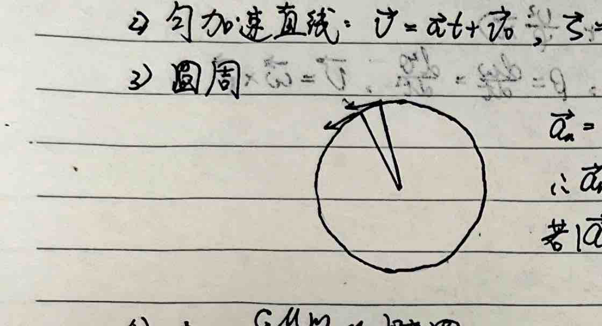
Magnitude of velocity does not change, only direction changes. The change in velocity acts as centripetal acceleration.
$$ a_n = \frac{v^2}{R} = \omega^2 R = \omega v = \frac{4\pi^2}{T^2} R $$4) General circular motion:
$$ a = \sqrt{a_t^2 + a_n^2} $$ $$ \begin{cases} a_t = \frac{dv}{dt} = \beta R \\ a_n = \frac{v^2}{R} = \omega^2 R \end{cases} $$5) General curvilinear motion (e.g. Ellipse):
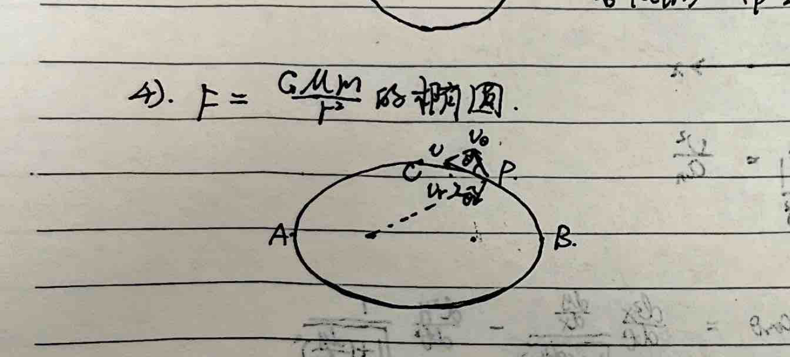
Velocity vectors $v_\theta$ and $v_r$,
$$ v = \sqrt{v_\theta^2 + v_r^2} $$ $$ \begin{cases} a_\theta = \frac{v_\theta^2}{r} = \omega^2 r = \omega v_\theta \\ a_r = \frac{dv_r}{dt} \end{cases} \quad \text{Then } a = \sqrt{a_\theta^2 + a_r^2} $$6) Projectile motion:
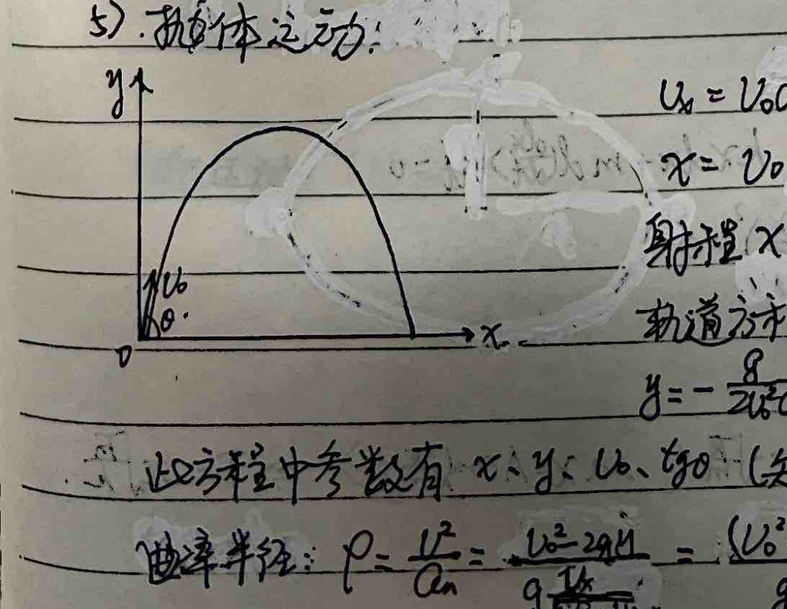
Projectile motion equation:
$$ \begin{cases} x = v_0 \cos\theta \cdot t \\ y = v_0 \sin\theta \cdot t - \frac{1}{2} gt^2 \end{cases} $$ $$ \therefore y = x \tan\theta - \frac{g}{2v_0^2 \cos^2\theta} x^2 $$ $$ v = \sqrt{v_x^2 + v_y^2} = \sqrt{(v_0\cos\theta)^2 + (v_0\sin\theta - gt)^2} = \sqrt{v_0^2 - 2v_0gt\sin\theta + g^2t^2} $$Apex of motion trajectory:
$$ \begin{cases} H_{max} = \frac{(v_0\sin\theta)^2}{2g} \\ L = \frac{v_0^2\sin2\theta}{g} \end{cases} $$7) Simple harmonic motion:
Definition: The restoring force on an object is proportional to the displacement from the equilibrium position and points opposite to the displacement.
$$ F = -kx \Rightarrow m \frac{d^2x}{dt^2} = -kx \Rightarrow \frac{d^2x}{dt^2} + \frac{k}{m}x = 0 $$Let $\omega^2 = \frac{k}{m}$, we get $\frac{d^2x}{dt^2} + \omega^2 x = 0$. Solving the differential equation gives:
$$ x(t) = A\cos(\omega t + \varphi_0) $$where $\omega = \sqrt{\frac{k}{m}}$ is the angular frequency. $T = \frac{2\pi}{\omega} = 2\pi\sqrt{\frac{m}{k}}$ is the period. $\varphi_0$ is the initial phase.
<1> Spring oscillator:
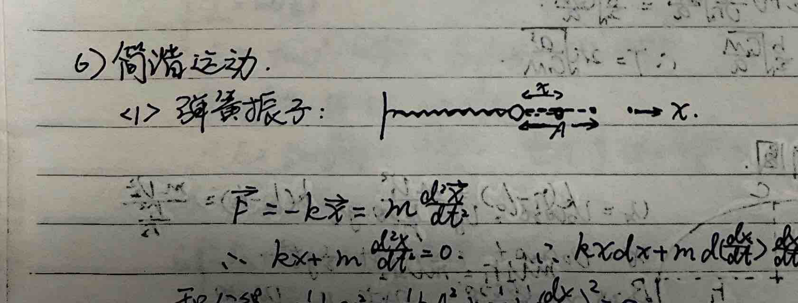
$$ \begin{cases} \text{Spring constant: } k \\ \text{Angular frequency: } \omega = \sqrt{\frac{k}{m}} \\ \text{Period: } T = 2\pi\sqrt{\frac{m}{k}} \end{cases} $$When two springs are connected in series:
$$ \Delta x = \Delta x_1 + \Delta x_2 = \frac{F}{k_1} + \frac{F}{k_2} = F\left(\frac{1}{k_1} + \frac{1}{k_2}\right) \therefore k = \frac{k_1 k_2}{k_1 + k_2} $$When two springs are connected in parallel: $k = k_1 + k_2$
<2> Simple pendulum:
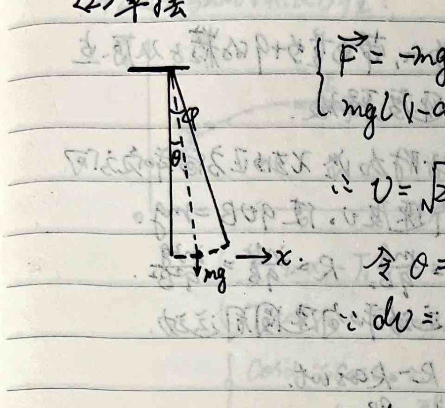
$$ F_\tau = -mg\sin\theta $$Since $\theta$ is very small, $\sin\theta \approx \theta = \frac{s}{l}$.
$$ \therefore F_\tau = -mg \frac{s}{l} = -\left(\frac{mg}{l}\right)s $$ $$ \therefore \begin{cases} \omega = \sqrt{\frac{mg/l}{m}} = \sqrt{\frac{g}{l}} \\ T = 2\pi\sqrt{\frac{l}{g}} \end{cases} $$<3> Compound pendulum:
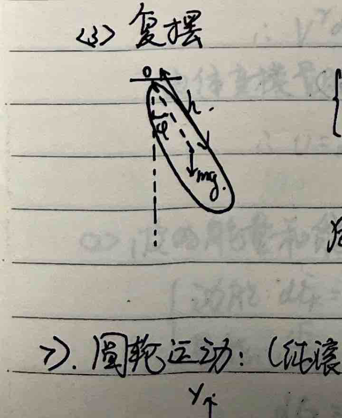
Applying the law of rotation: $M = I\beta$
$$ -mg h \sin\theta = I \frac{d^2\theta}{dt^2} \Rightarrow \frac{d^2\theta}{dt^2} = -\frac{mg h}{I} \sin\theta $$When $\theta$ is very small, $\sin\theta \approx \theta$.
$$ \therefore \frac{d^2\theta}{dt^2} + \frac{mg h}{I} \theta = 0 $$ $$ \therefore \omega = \sqrt{\frac{mg h}{I}}, \quad T = 2\pi\sqrt{\frac{I}{mg h}} $$<4> Cycloid motion:
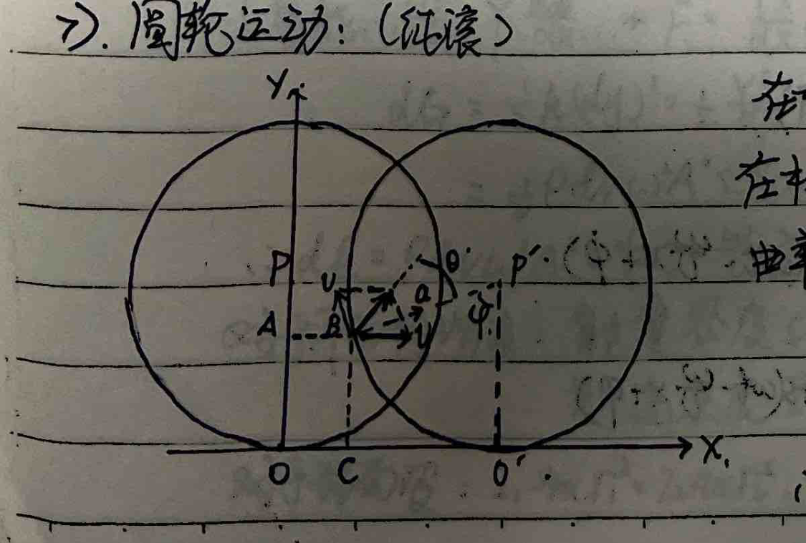
$$ \begin{cases} x = R(\varphi - \sin\varphi) \\ y = R(1 - \cos\varphi) \end{cases} $$Since it's uniformly accelerated from rest at highest point $A$, the velocity at any point $P$ is:
$$ v = \sqrt{2g y} = \sqrt{2g R(1 - \cos\varphi)} = 2\sqrt{g R} \sin\frac{\varphi}{2} $$Also:
$$ \begin{cases} dx = R(1 - \cos\varphi)d\varphi = 2R\sin^2\frac{\varphi}{2} d\varphi \\ dy = R\sin\varphi d\varphi = 2R\sin\frac{\varphi}{2}\cos\frac{\varphi}{2} d\varphi \end{cases} $$ $$ ds = \sqrt{dx^2 + dy^2} = 2R\sin\frac{\varphi}{2} d\varphi $$ $$ v = \frac{ds}{dt} = 2R\sin\frac{\varphi}{2} \frac{d\varphi}{dt} $$ $$ \therefore \frac{d\varphi}{dt} = \sqrt{\frac{g}{R}}, \quad \text{Time elapsed } t = \int_0^\pi dt = \int_0^\pi \sqrt{\frac{R}{g}} d\varphi = \pi\sqrt{\frac{R}{g}} $$8) Combination of Gravity and Magnetic Fields:
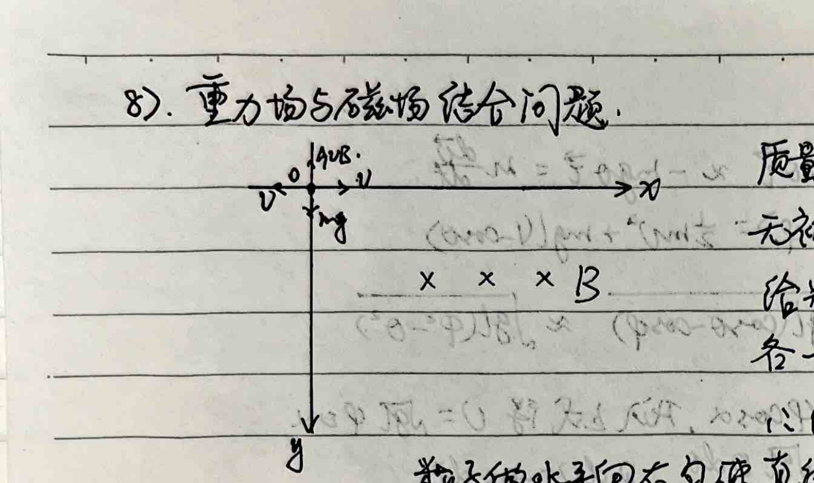
$$ \begin{cases} mg - qv_x B = m \frac{dv_y}{dt} \quad \text{①} \\ qv_y B = m \frac{dv_x}{dt} \quad \text{②} \end{cases} $$Differentiating ① with respect to $t$:
$$ -q B \frac{dv_x}{dt} = m \frac{d^2v_y}{dt^2} \Rightarrow \frac{d^2v_y}{dt^2} = -\frac{qB}{m}\left(\frac{qB}{m}v_y\right) = -\left(\frac{qB}{m}\right)^2 v_y $$Let $\omega = \frac{qB}{m}$, then $\frac{d^2v_y}{dt^2} + \omega^2 v_y = 0$,
$$ v_y = A\cos(\omega t + \varphi) $$Using initial condition $t=0, v_y=0 \Rightarrow v_y = v_{y0}\sin(\omega t)$.
Substitute $v_y$ into ②: $m \frac{dv_x}{dt} = qB v_{y0} \sin(\omega t) = m\omega v_{y0} \sin(\omega t)$
$$ \therefore v_x = -v_{y0}\cos(\omega t) + C $$From initial condition $t=0, v_x=0 \Rightarrow C = v_{y0}$,
$$ \therefore v_x = v_{y0}(1 - \cos\omega t) $$Substitute $v_x$ into ①:
$$ mg - qB v_{y0}(1 - \cos\omega t) = m\omega v_{y0} \cos\omega t $$ $$ \Rightarrow mg = qB v_{y0} = m\omega v_{y0} \Rightarrow v_{y0} = \frac{g}{\omega} $$ $$ \therefore \begin{cases} v_x = \frac{g}{\omega}(1 - \cos\omega t) \\ v_y = \frac{g}{\omega}\sin\omega t \end{cases} \Rightarrow \begin{cases} x = \frac{g}{\omega}\left(t - \frac{\sin\omega t}{\omega}\right) \\ y = \frac{g}{\omega^2}(1 - \cos\omega t) \end{cases} $$This is a cycloid. Let $R = \frac{g}{\omega^2} = \frac{m^2 g}{q^2 B^2}$, $\varphi = \omega t$, then:
$$ \begin{cases} x = R(\varphi - \sin\varphi) \\ y = R(1 - \cos\varphi) \end{cases} $$9) Kinematics of Mechanical Waves:
<1> Mechanical wave equation:
A harmonic wave propagates along the $+x$ axis. The oscillator at the origin performs simple harmonic motion: $y(0,t) = A\cos(\omega t + \varphi)$.
The time it takes for the wave to travel distance $x$ is $t' = \frac{x}{v}$.
$$ \therefore y(x,t) = y(0, t - t') = A\cos\left(\omega\left(t - \frac{x}{v}\right) + \varphi\right) = A\cos\left(\omega t - \frac{\omega}{v}x + \varphi\right) $$This is the standard form of a simple harmonic wave equation. Wave speed $v = \lambda \nu = \frac{\lambda}{T}$, wave number $k = \frac{2\pi}{\lambda} = \frac{\omega}{v}$.
Equation can be written as $y(x,t) = A\cos(\omega t - kx + \varphi)$.
Differential form of the wave equation:
$$ \frac{\partial^2 y(x,t)}{\partial t^2} = -\omega^2 A\cos\left(\omega t - \frac{\omega}{v}x + \varphi\right) $$ $$ \frac{\partial^2 y(x,t)}{\partial x^2} = -\frac{\omega^2}{v^2} A\cos\left(\omega t - \frac{\omega}{v}x + \varphi\right) $$ $$ \therefore \frac{\partial^2 y}{\partial t^2} = v^2 \frac{\partial^2 y}{\partial x^2} $$Transverse wave equation of a light flexible string:
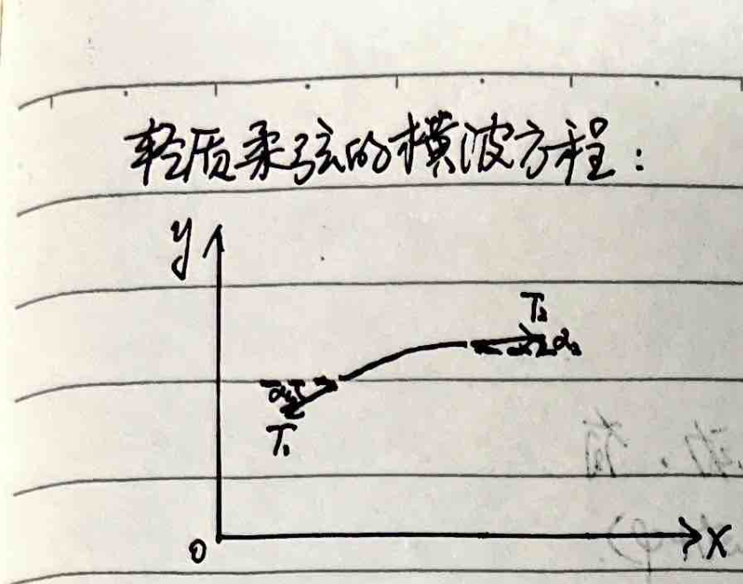
$$ \begin{cases} T_2 \sin\alpha_2 - T_1 \sin\alpha_1 = \rho \, ds \frac{\partial^2 y}{\partial t^2} \\ T_2 \cos\alpha_2 - T_1 \cos\alpha_1 = 0 \end{cases} $$ $$ \because \begin{cases} \cos\alpha_1 \approx \cos\alpha_2 \approx 1 \\ \sin\alpha_1 \approx \tan\alpha_1 = \left.\frac{\partial y}{\partial x}\right|_x, \quad \sin\alpha_2 \approx \tan\alpha_2 = \left.\frac{\partial y}{\partial x}\right|_{x+dx} \end{cases} $$ $$ \therefore \frac{\partial^2 y}{\partial t^2} = \frac{T}{\rho} \frac{\partial^2 y}{\partial x^2} $$ $$ \therefore v = \sqrt{\frac{T}{\rho}} $$Speed of sound in a dilute gas:
The gas undergoes an adiabatic process during propagation, $PV^\gamma = C$
$$ \therefore V^\gamma dp + \gamma PV^{\gamma-1} dV = 0 \Rightarrow \frac{dp}{dV} = -\gamma \frac{P}{V} $$From the definition of bulk modulus: $dp = -B \frac{dV}{V} \therefore B = -V \frac{dp}{dV} = \gamma P$
$$ \therefore v = \sqrt{\frac{B}{\rho}} = \sqrt{\frac{\gamma P}{\rho}} = \sqrt{\frac{\gamma RT}{M}} $$<2> Wave energy and energy flux:
$$ \begin{cases} \text{Kinetic energy: } dE_k = \frac{1}{2} dm \cdot v^2 = \frac{1}{2} \rho \, dV \left(\frac{\partial y}{\partial t}\right)^2 = \frac{1}{2} \rho \, dV \, \omega^2 A^2 \sin^2\left(\omega t - \frac{\omega}{v}x\right) \\ \text{Potential energy: } \frac{F}{S} = Y \frac{dy}{dx} \Rightarrow F = \frac{YS}{dx} dy = k \, dy \end{cases} $$ $$ dE_p = \frac{1}{2}k(dy)^2 = \frac{1}{2}\frac{YS}{dx}(dy)^2 = \frac{1}{2}\left(\frac{\partial y}{\partial x}\right)^2(S \, dx) \cdot Y = \frac{1}{2}\left(\frac{\partial y}{\partial x}\right)^2 \cdot Y \, dV $$ $$ = \frac{1}{2} \rho \, dV \, \omega^2 A^2 \sin^2\left(\omega t - \frac{\omega}{v}x\right) $$ $$ \therefore dE = dE_k + dE_p = \rho \, dV \, \omega^2 A^2 \sin^2\left(\omega t - \frac{\omega}{v}x\right) $$For a plane harmonic wave:
Energy density $\varepsilon = \frac{dE}{dV} = \rho \, \omega^2 A^2 \sin^2(\omega t - \frac{\omega}{v}x)$
Energy flux density $\vec{I} = \varepsilon \vec{v}$, $\bar{I} = \bar{\varepsilon}v = \frac{1}{2} \rho A^2 \omega^2 v$
For a spherical wave:
$$ \bar{I}_1 4\pi r_1^2 = \bar{I}_2 4\pi r_2^2 \therefore \frac{\bar{I}_1}{\bar{I}_2} = \frac{r_2^2}{r_1^2} = \frac{A_1^2}{A_2^2} \therefore y = \frac{A_0 r_0}{r}\cos(\omega t - kr) $$<3> Wave interference:
$$ y_1(x,t) = A_1\cos\left(\omega t - \frac{\omega}{v}x_1 + \varphi_1\right) $$ $$ y_2(x,t) = A_2\cos\left(\omega t - \frac{\omega}{v}x_2 + \varphi_2\right) $$At a point P, the superposition of two waves is still a simple harmonic motion,
$$ y(t) = y_1(x_1, t) + y_2(x_2, t) = A\cos(\omega t + \varphi) $$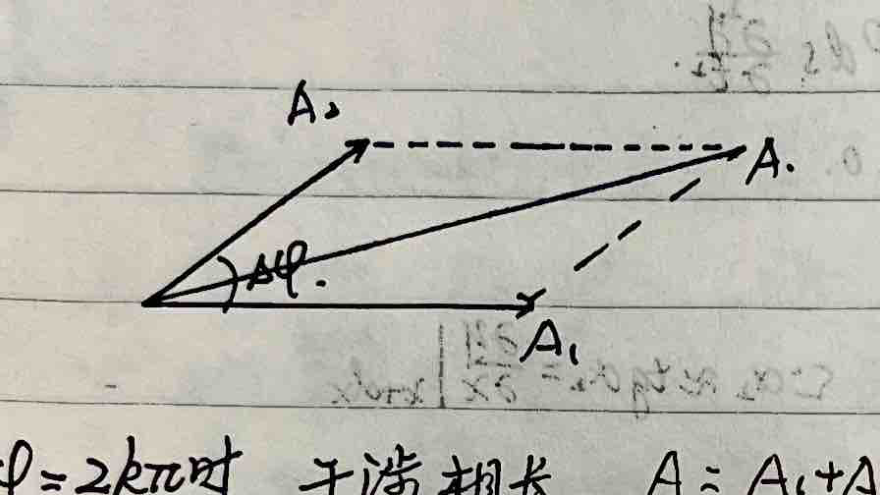
$$ \Delta \varphi = (\varphi_1 - \varphi_2) - \frac{2\pi}{\lambda}(x_1 - x_2) $$ $$ A = \sqrt{A_1^2 + A_2^2 + 2A_1 A_2 \cos\Delta\varphi} $$When $\Delta\varphi = 2k\pi$, constructive interference occurs, $A = A_1 + A_2$
When $\Delta\varphi = (2k+1)\pi$, destructive interference occurs, $A = |A_1 - A_2|$
<4> Standing waves: Essentially wave interference
Left-traveling wave $y_1(x,t) = A\cos\left(\omega t + \frac{2\pi}{\lambda}x\right)$
Right-traveling wave $y_2(x,t) = A\cos\left(\omega t - \frac{2\pi}{\lambda}x\right)$
$$ \therefore y(x,t) = y_1(x,t) + y_2(x,t) = 2A\cos\left(\frac{2\pi}{\lambda}x\right) \cos\omega t $$ $$ \begin{cases} \text{When } \frac{2\pi}{\lambda}x = k\pi \text{, i.e., } x = k\frac{\lambda}{2} \text{, the amplitude is maximum, it is an antinode.} \\ \text{When } \frac{2\pi}{\lambda}x = (2k+1)\frac{\pi}{2} \text{, i.e., } x = (2k+1)\frac{\lambda}{4} \text{, the amplitude is zero, it is a node.} \end{cases} $$ $$ \begin{cases} \text{Both endpoints of a string wave must be standing wave nodes, thus string length } L = k\cdot\frac{\lambda}{2} \\ \text{The motion of an extranuclear electron around the nucleus is a matter wave, the orbital circumference satisfies } 2\pi R = k\lambda \end{cases} $$④ Particle Dynamics:
Instantaneous effect: $\vec{F} = m\vec{a} = m\frac{d\vec{v}}{dt}$
Accumulation over time: $\vec{F} dt = m d\vec{v} \Rightarrow \int_{t_1}^{t_2} \vec{F} dt = m(\vec{v}_2 - \vec{v}_1)$
Accumulation over space: $\vec{F} \cdot d\vec{s} = m\vec{v} \cdot d\vec{v} \Rightarrow \int_{s_1}^{s_2} \vec{F} \cdot d\vec{s} = \frac{1}{2}m(v_2^2 - v_1^2)$
$$ P = \frac{dW}{dt} = \vec{F} \cdot \vec{v} $$⑤ Rigid Body Dynamics:
$$ \vec{M} = \vec{r} \times \vec{F} $$Instantaneous effect: $M = I\beta = I\frac{d\omega}{dt}$ ($I = \int r^2 dm$, where $r$ is the distance from $dm$ to the axis of rotation)
Accumulation over time: $M dt = I d\omega \Rightarrow \int_{t_1}^{t_2} M dt = I(\omega_2 - \omega_1)$
Accumulation over space: $M d\theta = I\omega d\omega \Rightarrow \int_{\theta_1}^{\theta_2} M d\theta = \frac{1}{2}I(\omega_2^2 - \omega_1^2)$
$$ P = \frac{dW}{dt} = \vec{M} \cdot \vec{\omega} $$1) Parallel axis theorem of moment of inertia: $I = I_c + md^2$
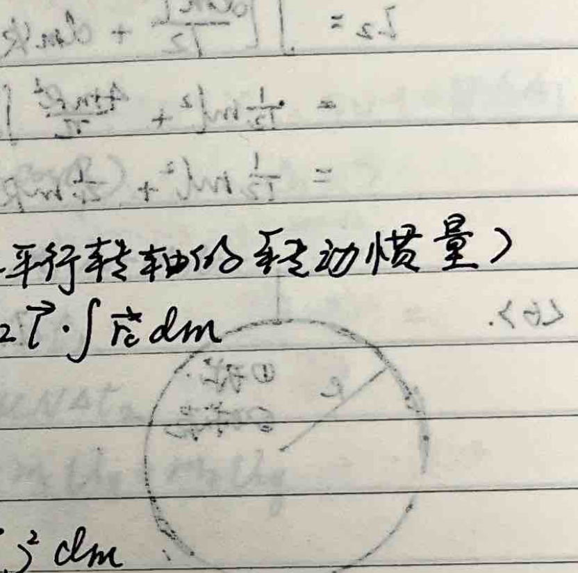
($I_c$: moment of inertia of the rigid body with respect to an axis passing through the center of mass, $I$: moment of inertia of the rigid body with respect to another parallel axis at a distance $l$ from the axis passing through the center of mass)
$$ I = \int r^2 dm = \int (\vec{r}_c - \vec{l})^2 dm = I_c + ml^2 - 2\vec{l}\cdot\int \vec{r}_c dm = I_c + ml^2 $$2) Perpendicular axis theorem of moment of inertia: $I_z = I_x + I_y$
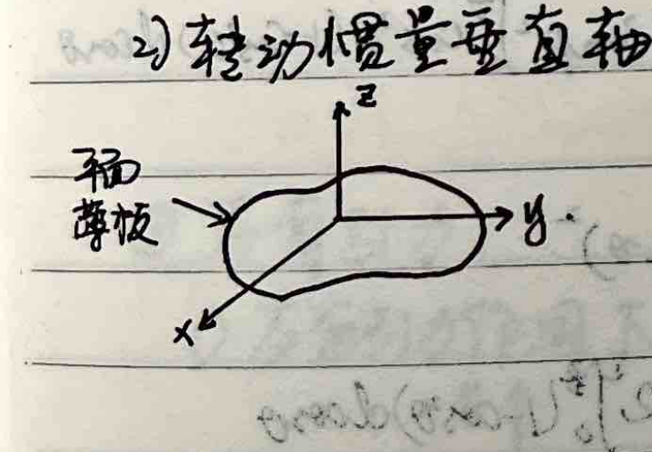
$$ I_z = \int r^2 dm = \int (x^2 + y^2) dm = \int x^2 dm + \int y^2 dm = I_x + I_y $$3) Moments of inertia of typical geometric bodies:
<1> Ring
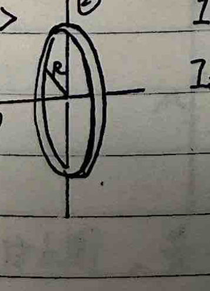
$$ I_1 = \int r^2 dm = mR^2 $$<2> Disk
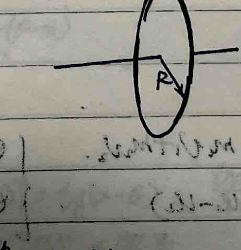
$$ I_2 = \int_0^R r^2 \frac{2\pi r dr}{\pi R^2} m = \frac{2m}{R^2}\int_0^R r^3 dr = \frac{1}{2}mR^2 $$<3> Cylindrical shell
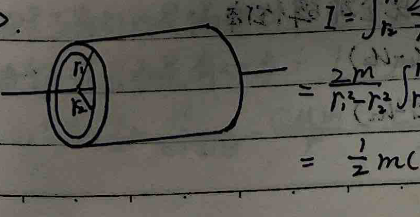
$$ I_3 = \int_{r_1}^{r_2} r^2 \frac{2\pi r dr}{\pi(r_2^2-r_1^2)} m = \frac{2m}{r_2^2-r_1^2} \int_{r_1}^{r_2} r^3 dr = \frac{1}{2}m(r_1^2+r_2^2) $$<4> Thin rod
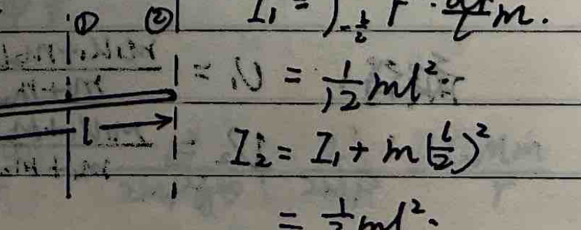
① Around the central axis:
$$ I_1 = \int_{-L/2}^{L/2} r^2 \frac{m}{L} dr = \frac{1}{12}mL^2 $$② Around the endpoint axis:
$$ I_2 = I_1 + m\left(\frac{L}{2}\right)^2 = \frac{1}{3}mL^2 $$<5> Solid cylinder
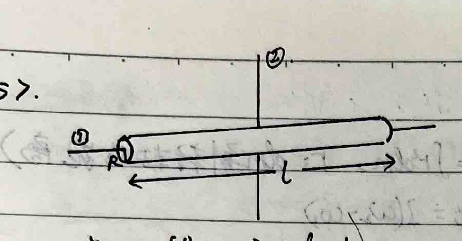
$$ I_1 = \int_0^R r^2 \frac{2\pi r dr \cdot l}{\pi R^2 l} m = \frac{1}{2}mR^2 $$ $$ I_2 = \int \left[ \frac{dm \cdot l^2}{12} + dm(R\sin\theta)^2 \right] = \frac{1}{12}ml^2 + 2\int_0^{\pi/2} \frac{(R\cos\theta)(R d\theta\cos\theta)}{\pi R^2} m (R\sin\theta)^2 $$ $$ = \frac{1}{12}ml^2 + \frac{4mR^2}{\pi} \int_0^{\pi/2} \cos^2\theta \sin^2\theta d\theta $$ $$ = \frac{1}{12}ml^2 + \frac{1}{4}mR^2 $$<6> Sphere and spherical shell
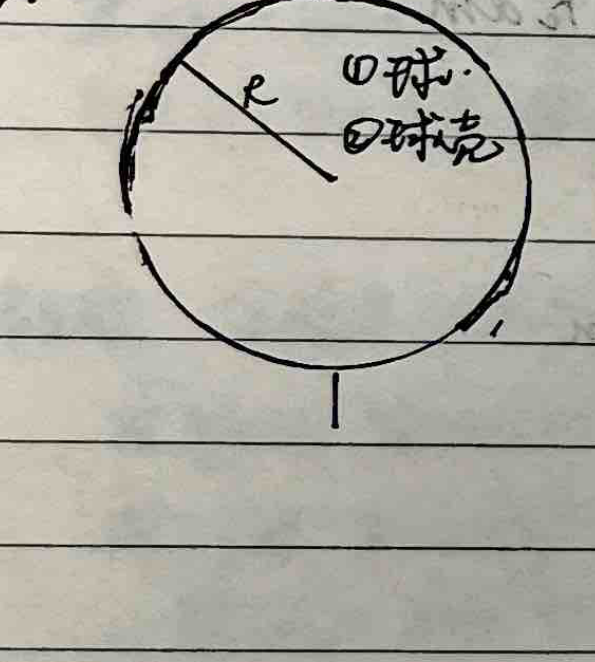
① Solid sphere:
$$ I_1 = \int_0^{\pi/2} \frac{(\pi R^2\cos^2\theta)(R d\theta\cos\theta)}{\frac{4}{3}\pi R^3} m (R\sin\theta)^2 = 3mR^2 \int_0^{\pi/2} \cos^3\theta \sin^2\theta d\theta = \frac{2}{5}mR^2 $$② Spherical shell:
$$ I_2 = 2\int_0^{\pi/2} \frac{2\pi R\cos\theta \cdot R d\theta}{4\pi R^2} m (R\sin\theta)^2 = mR^2 \int_0^{\pi/2} \sin^2\theta \cos\theta d\theta = \frac{2}{3}mR^2 $$⑥ Collisions:
1) Head-on collision:
$$ \begin{cases} m_1v_1 + m_2v_2 = m_1v_1' + m_2v_2' \\ v_2' - v_1' = e(v_1 - v_2) \end{cases} $$ $$ \begin{cases} e = 1 \text{ Perfectly elastic body} \\ e \in (0, 1) \text{ General inelastic body} \\ e = 0 \text{ Perfectly inelastic body} \end{cases} $$Solving yields:
$$ v_1' = \frac{m_1v_1+m_2v_2}{m_1+m_2} - \frac{m_2}{m_1+m_2}e(v_1-v_2) $$ $$ v_2' = \frac{m_1v_1+m_2v_2}{m_1+m_2} + \frac{m_1}{m_1+m_2}e(v_1-v_2) $$The first term is the center of mass velocity: $\frac{m_1v_1+m_2v_2}{m_1+m_2}$, which remains constant due to conservation of momentum.
The second term is the velocity relative to the center of mass. Energy is dissipated due to the two-body interaction in the center of mass frame.
Energy lost:
$$ \Delta E = \frac{1}{2}m_1v_1^2 + \frac{1}{2}m_2v_2^2 - \frac{1}{2}m_1v_1'^2 - \frac{1}{2}m_2v_2'^2 $$ $$ = \frac{1}{2}\frac{m_1m_2}{m_1+m_2}(v_1-v_2)^2 - \frac{1}{2}\frac{m_1m_2}{m_1+m_2}(v_1'-v_2')^2 $$ $$ = \frac{1}{2}(1-e^2)\frac{m_1m_2}{m_1+m_2}(v_1-v_2)^2 $$2) Oblique collision:
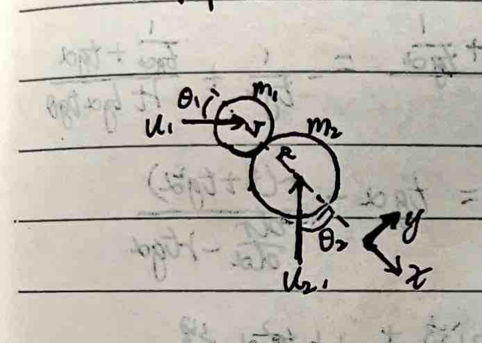
$$ v_{2x}' - v_{1x}' = e(v_1\cos\theta_1 - v_2\cos\theta_2) $$ $$ m_1v_1\cos\theta_1 + m_2v_2\cos\theta_2 = m_1v_{1x}' + m_2v_{2x}' $$ $$ -m_1v_1\cos\theta_1 + m_1v_{1x}' = N \Delta t_1 $$ $$ -m_1v_1\sin\theta_1 + m_1v_{1y}' = \mu N \Delta t_1 $$ $$ m_1v_1\sin\theta_1 + m_2v_2\sin\theta_2 = m_1v_{1y}' + m_2v_{2y}' $$⑦ Universal Gravitation:
1) Trajectory of a particle under universal gravitation:
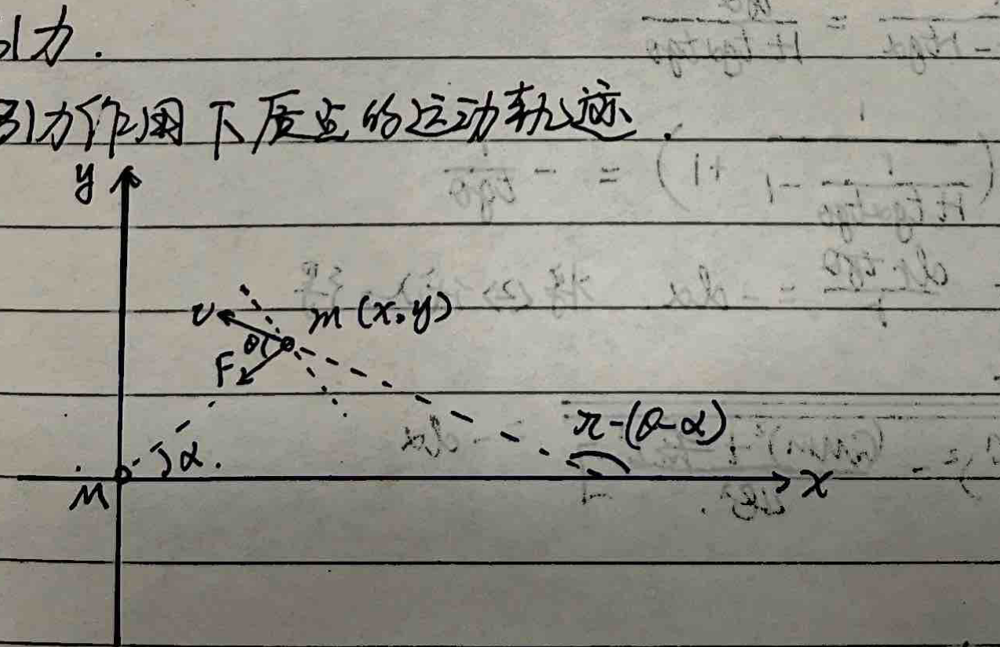
From the above figure, $\frac{y}{x} = \tan\alpha$, $\frac{dy}{dx} = \tan[\pi-(\theta-\alpha)] = \tan(\alpha-\theta) = \frac{\tan\alpha-\tan\theta}{1+\tan\alpha\tan\theta}$ <1>
Since universal gravitation is a conservative force: $E = \frac{1}{2}mv^2 - \frac{GmM}{r}$ is constant.
Since universal gravitation is a central force: $L = mvr\sin\theta$ is constant.
$$ \therefore E = \frac{1}{2}m\frac{L^2}{m^2r^2\sin^2\theta} - \frac{GmM}{r} = \frac{L^2(1+\tan^2\theta)}{2mr^2\tan^2\theta} - \frac{GmM}{r} = \frac{L^2}{2mr^2\tan^2\theta} + \frac{L^2}{2mr^2} - \frac{GmM}{r} $$Solving gives:
$$ \tan^2\theta = \frac{L^2}{2mr^2} / \left(E + \frac{GmM}{r} - \frac{L^2}{2mr^2}\right) = \frac{L^2}{2mr^2E + 2GmMmr - L^2} $$ $$ \therefore \tan\theta = \frac{L}{\sqrt{2mE\left[\left(r+\frac{GmM}{2E}\right)^2 - \left(\frac{GmM}{2E}\right)^2 + \frac{L^2}{2mE}\right]}} \quad \text{<2>} $$Since $y = r\sin\alpha$, $x = r\cos\alpha$, equation <1> becomes:
$$ \frac{\sin\alpha \, dr + r\cos\alpha \, d\alpha}{\cos\alpha \, dr - r\sin\alpha \, d\alpha} = \frac{\tan\alpha - \tan\theta}{1 + \tan\alpha\tan\theta} = -\frac{1}{\tan\theta} + \frac{\frac{1}{\tan\alpha}+\tan\alpha}{1+\tan\alpha\tan\theta} $$Separating variables gives:
$$ \frac{dr}{r\tan\theta} = -d\alpha $$Substituting <2> yields:
$$ \frac{L \, dr}{r\sqrt{2mE\left[\left(r+\frac{GmM}{2E}\right)^2 - \left(\frac{GmM}{2E}\right)^2 + \frac{L^2}{2mE}\right]}} = -d\alpha \quad \text{<3>} $$Let $u = \frac{1}{r}$, then:
$$ \frac{L\left(-\frac{du}{u^2}\right)}{\frac{1}{u}\sqrt{2mE\left[\left(\frac{1}{u}+\frac{GmM}{2E}\right)^2 - \left(\frac{GmM}{2E}\right)^2 + \frac{L^2}{2mE}\right]}} = -d\alpha $$Simplifying gives:
$$ \frac{du}{\sqrt{\frac{2mE}{L^2} + \left(\frac{GmM}{L^2}\right)^2 - \left(u - \frac{GmM}{L^2}\right)^2}} = d\alpha \quad \text{<4>} $$Let $u - \frac{GmM}{L^2} = \sqrt{\frac{2mE}{L^2} + \left(\frac{GmM}{L^2}\right)^2} \cos\beta$, then $d\beta = -d\alpha$.
$$ \therefore u - \frac{GmM}{L^2} = \sqrt{\frac{2mE}{L^2} + \left(\frac{GmM}{L^2}\right)^2} \cos\alpha $$Substitute $u = \frac{1}{\sqrt{x^2+y^2}}$ and $\cos\alpha = \frac{x}{\sqrt{x^2+y^2}}$ into the above equation to get:
$$ \frac{1}{\sqrt{x^2+y^2}} = \frac{GmM}{L^2} + \frac{\sqrt{2mEL^2 + (GmM)^2}}{L^2} \frac{x}{\sqrt{x^2+y^2}} \quad \text{<5>} $$Rearranging yields:
$$ \frac{y^2}{-\frac{L^2}{2mE}} + \frac{\left(x - \frac{\sqrt{(GmM)^2+2mEL^2}}{2mE}\right)^2}{\left(\frac{GmM}{2E}\right)^2} = 1 \quad \text{<6>} $$1. If $E = 0$:
For equation <5> we have:
$$ \frac{1}{\sqrt{x^2+y^2}} = \frac{GmM}{L^2} + \frac{GmM}{L^2}\frac{x}{\sqrt{x^2+y^2}} $$Simplifying gives:
$$ 1 - \frac{2GmM}{L^2}x = \left(\frac{GmM}{L^2}\right)^2 y^2 $$This is the equation of a parabola. <7>
2. If $E > 0$:
For equation <6> we have $-\frac{L^2}{2mE} < 0$,
$$ \therefore \frac{\left(x-\frac{\sqrt{(GmM)^2+2mEL^2}}{2mE}\right)^2}{\left(\frac{GmM}{2E}\right)^2} - \frac{y^2}{\left(\sqrt{\frac{L^2}{2mE}}\right)^2} = 1 $$This is a hyperbola. <8>
3. If $E < 0$:
For equation <6> we have $-\frac{L^2}{2mE} > 0$,
$$ \therefore \frac{\left(x-\frac{\sqrt{(GmM)^2+2mEL^2}}{2mE}\right)^2}{\left(\frac{GmM}{2E}\right)^2} + \frac{y^2}{\left(\sqrt{-\frac{L^2}{2mE}}\right)^2} = 1 $$This is an ellipse. <9>
$\Delta$ When $(GmM)^2 + 2mEL^2 = 0$, i.e., $E = -\frac{(GmM)^2}{2mL^2} = -\frac{G^2mM^2}{2L^2}$,
equation <9> becomes $x^2 + y^2 = \left(-\frac{GmM}{2E}\right)^2$, which is the equation of a circle.
$\Delta$ When $E < -\frac{GmM^2G}{2L^2}$, this situation does not exist ($\Delta < 0$).
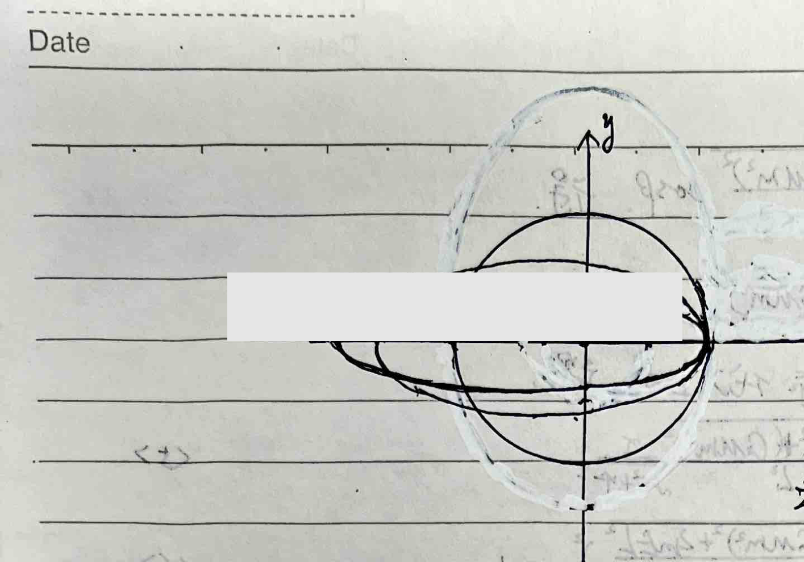
2) Gravitational Potential Energy (reference point at infinity, $E_p=0$)
① Uniform solid sphere (radius $R$, mass $M$)
1) When $r \ge R$:
$$ E_p = \int_\infty^r \frac{GmM}{r^2} dr = \left. -\frac{GmM}{r} \right|_\infty^r = -\frac{GmM}{r} $$2) When $r < R$:
$$ E_p = \int_\infty^R \frac{GmM}{r^2} dr + \int_R^r G\left(\frac{r}{R^3}M\right)m dr = -\frac{GmM}{R} - \frac{GmM(R^2-r^2)}{2R^3} $$② Thin spherical shell (radius $R$, mass $M$)
1) When $r \ge R$:
$$ E_p = -\frac{GmM}{r} $$2) When $r < R$:
$$ E_p = -\frac{GmM}{R} $$3) Gravitational field strength: Gauss's Law for gravity: $\frac{1}{4\pi G} \oint \vec{E} \cdot d\vec{S} = \sum m_i$
① Thin spherical shell (radius $R$, mass $M$)
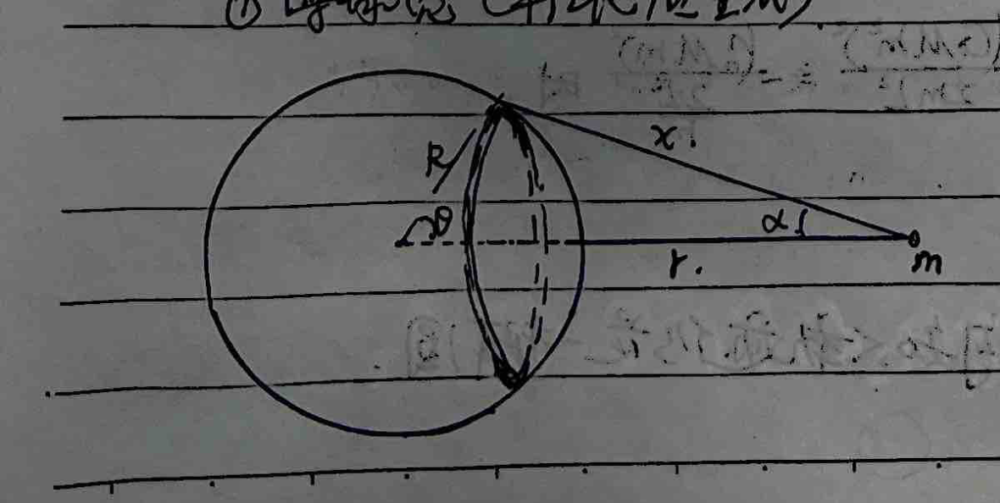
$$ dE = G \frac{2\pi R\sin\theta \cdot R d\theta}{x^2} \sigma \cos\alpha $$ $$ \because \cos\alpha = \frac{x^2+r^2-R^2}{2rx}, \quad x^2 = R^2+r^2-2Rr\cos\theta $$ $$ \therefore x \, dx = Rr\sin\theta \, d\theta $$ $$ \therefore dE = \frac{2\pi R^2 G\sigma}{Rr} x \, dx \cdot \frac{x^2+r^2-R^2}{2rx^3} = \frac{2\pi R^2 G\sigma}{2r^2 R} \left(1 + \frac{r^2-R^2}{x^2}\right) dx $$1) When $r \ge R$:
$$ E = \int_{r-R}^{r+R} \frac{GM}{4R r^2} \left(1 + \frac{r^2-R^2}{x^2}\right) dx = \frac{GM}{r^2} $$2) When $r < R$:
$$ E = \int_{R-r}^{R+r} \frac{GM}{4R r^2} \left(1 + \frac{r^2-R^2}{x^2}\right) dx = 0 $$Therefore $E=0$.
② Uniform solid sphere (radius $R$, mass $M$)
1) When $r \ge R$:
$$ E = \int_0^R G \frac{4\pi r^2 dr \rho}{r^2} = G \frac{\frac{4}{3}\pi R^3 \cdot \frac{M}{\frac{4}{3}\pi R^3}}{r^2} = \frac{GM}{r^2} $$2) When $r < R$:
$$ E = G \frac{r^3}{R^3} \frac{M}{r^2} = \frac{GMr}{R^3} $$4) Cosmic Velocities
① First Cosmic Velocity: (Minimum velocity for orbiting)
$$ E = \frac{1}{2}mv^2 - \frac{GmM}{r}, \quad \text{and } m\frac{v^2}{r} = \frac{GmM}{r^2} $$ $$ \therefore E = \frac{1}{2}mv^2 - mv^2 = -\frac{1}{2}mv^2 $$It can be seen that the larger $v$ is, the smaller $E$ is. For a star with radius $R$, $v_{max} = \sqrt{\frac{GM}{R}}$,
$$ \therefore E_{min} = -\frac{GmM}{2R} \text{, at this time the object moves in a circular orbit.} $$Also, on Earth $g = \frac{GM}{R^2}$, $\therefore v_1 = \sqrt{gR} = 7.9 \text{ km/s}$
② Second Cosmic Velocity: (Minimum velocity for escape)
$$ E = \frac{1}{2}mv^2 - \frac{GmM}{R} \text{. When } E \ge 0 \text{, the trajectory is a parabola or hyperbola, meaning it escapes orbiting.} $$Therefore, when $E=0$, the required escape velocity is minimum. For Earth, $v_2 = \sqrt{\frac{2GM}{R}} = 11.2 \text{ km/s}$.
For a black hole, $v_2 = \sqrt{\frac{2GM}{R_s}} = c$, thus $R_s = \frac{2GM}{c^2}$ (Schwarzschild radius).
③ Third Cosmic Velocity: (Escaping the solar system)
If Earth's revolution is ignored, then $\frac{1}{2}mv^2 - \frac{GmM_\odot}{R_\oplus} = 0 \Rightarrow v = \sqrt{\frac{2GM_\odot}{R_\oplus}} = 42.2 \text{ km/s}$.
Taking Earth as the reference frame (Earth's orbital speed is $29.8 \text{ km/s}$):
$$ \frac{1}{2}mv_{III}^2 - \frac{GmM_\oplus}{R_\oplus} = \frac{1}{2}m(42.2 \text{ km/s} - 29.8 \text{ km/s})^2 $$Solving yields $v_{III} = \sqrt{(42.2 - 29.8)^2 + 11.2^2} \text{ km/s} = 16.7 \text{ km/s}$.
Special Topic: Center of Mass Frame
1. Definition:
$$ \frac{\sum m_i \vec{r}_{ci}}{\sum m_i} = 0 $$Taking the derivative yields $\frac{\sum m_i \vec{v}_{ci}}{\sum m_i} = 0$, which means $\sum m_i \vec{v}_{ci} = 0$. Therefore, the center of mass frame is also called the zero-momentum frame.
2. König's Theorem
In an isolated two-body system, the velocities of particles 1 and 2 in the ground frame are $\vec{v}_1, \vec{v}_2$.
Their velocities in the center of mass frame are $\vec{v}_{c1}, \vec{v}_{c2}$. The velocity of the center of mass relative to the ground is $\vec{v}_c$.
$$ \therefore \vec{v}_1 = \vec{v}_{c1} + \vec{v}_c, \quad \vec{v}_2 = \vec{v}_{c2} + \vec{v}_c $$The kinetic energy in the ground frame is $E_k = \frac{1}{2}m_1v_1^2 + \frac{1}{2}m_2v_2^2$
$$ = \frac{1}{2}m_1(\vec{v}_{c1} + \vec{v}_c)^2 + \frac{1}{2}m_2(\vec{v}_{c2} + \vec{v}_c)^2 $$ $$ = \frac{1}{2}m_1v_{c1}^2 + \frac{1}{2}m_1v_c^2 + m_1\vec{v}_{c1}\cdot\vec{v}_c + \frac{1}{2}m_2v_{c2}^2 + \frac{1}{2}m_2v_c^2 + m_2\vec{v}_{c2}\cdot\vec{v}_c $$ $$ = E_{kc1} + E_{kc2} + \frac{1}{2}(m_1+m_2)v_c^2 + (m_1\vec{v}_{c1} + m_2\vec{v}_{c2})\cdot\vec{v}_c $$Because the total momentum in the center of mass frame is zero, $\therefore m_1\vec{v}_{c1} + m_2\vec{v}_{c2} = 0$,
$$ \therefore E_k = E_{kc1} + E_{kc2} + \frac{1}{2}(m_1+m_2)v_c^2 $$Here, $E_{kc1}, E_{kc2}$ are the kinetic energies in the center of mass frame, and $\vec{v}_c = \frac{m_1\vec{v}_1+m_2\vec{v}_2}{m_1+m_2}$.
Generalizing to an n-particle isolated system, $E_k = \frac{1}{2}m_c v_c^2 + \sum E_{kc, i}$.
Let $\vec{u} = \vec{v}_1 - \vec{v}_2 = \vec{v}_{c1} - \vec{v}_{c2}$ be the relative velocity between the two particles.
Combining $\vec{u} = \vec{v}_{c1} - \vec{v}_{c2}$ and $m_1\vec{v}_{c1} + m_2\vec{v}_{c2} = 0$, solving yields:
$$ \begin{cases} \vec{v}_{c1} = \frac{m_2\vec{u}}{m_1+m_2} \\ \vec{v}_{c2} = -\frac{m_1\vec{u}}{m_1+m_2} \end{cases} $$ $$ \therefore E_k = \frac{1}{2}m_1 \frac{m_2^2 u^2}{(m_1+m_2)^2} + \frac{1}{2}m_2 \frac{m_1^2 u^2}{(m_1+m_2)^2} + \frac{1}{2}(m_1+m_2)v_c^2 $$ $$ = \frac{1}{2}\frac{m_1m_2}{m_1+m_2}u^2 + \frac{1}{2}(m_1+m_2)v_c^2 $$Note: ① For an isolated two-body system where momentum is conserved, interactions can only lose kinetic energy in the center of mass frame,
i.e., the term $\frac{1}{2}\frac{m_1m_2}{m_1+m_2}u^2$. The kinetic energy of the center of mass $\frac{1}{2}(m_1+m_2)\left(\frac{m_1\vec{v}_1+m_2\vec{v}_2}{m_1+m_2}\right)^2$ remains unchanged.
② For a two-body system subject to external forces, let $m_1$ experience external force $\vec{F}_1$, $m_2$ experience external force $\vec{F}_2$.
Then $\vec{F}_1 + \vec{F}_2 = (m_1+m_2)\vec{a}_c = (m_1+m_2)\frac{d\vec{v}_c}{dt}$. This is the effect on the second term of König's theorem.
The effect on the first term can be obtained from $m_1\frac{d\vec{v}_{c1}}{dt} + m_2\frac{d\vec{v}_{c2}}{dt} = 0$.
$$ \vec{F}_1 + \vec{F}_{in} = m_1\frac{d\vec{v}_1}{dt}, \quad \vec{F}_2 - \vec{F}_{in} = m_2\frac{d\vec{v}_2}{dt}, \quad \vec{v}_1 - \vec{v}_2 = \vec{v}_{c1} - \vec{v}_{c2} = \vec{u} $$ $$ \therefore \frac{\vec{F}_1 + \vec{F}_{in}}{m_1} - \frac{\vec{F}_2 - \vec{F}_{in}}{m_2} = \frac{d(\vec{v}_1-\vec{v}_2)}{dt} = \frac{d\vec{u}}{dt} $$ $$ = \frac{\vec{F}_1}{m_1} - \frac{\vec{F}_2}{m_2} + \frac{m_1+m_2}{m_1m_2}\vec{F}_{in} $$It can be seen that if $\vec{F}_1$ and $\vec{F}_2$ are zero, then $\vec{F}_{in} = \frac{m_1m_2}{m_1+m_2}\frac{d\vec{u}}{dt}$.
③ König's theorem does not apply to the rotation of a rigid body.
In the ground frame $E_k = \frac{1}{2}I_1\omega_1^2 + \frac{1}{2}I_2\omega_2^2$
In the center of mass frame $E_{kc} = \frac{1}{2}I_1'\omega_1'^2 + \frac{1}{2}I_2'\omega_2'^2$, but $I_1'\vec{\omega}_1' + I_2'\vec{\omega}_2' \neq 0$
3. Angular Momentum Theorem in the Center of Mass Frame:
$$ \frac{d\vec{L}_c}{dt} = \vec{M} + \sum \vec{r}_{ci} \times \vec{F}_{inertial\, i} = \vec{M} + \sum \vec{r}_{ci} \times (-m_i\vec{a}_c) $$ $$ = \vec{M} - (\sum m_i\vec{r}_{ci}) \times \vec{a}_c = \vec{M} $$4. König's Theorem for Angular Momentum:
Let $\vec{r}_i$ and $\vec{v}_i$ be the position vector and velocity of particle $m_i$ on the rigid body with respect to point P.
$$ \vec{L} = \sum (\vec{r}_i \times m_i\vec{v}_i) $$ $$ = \sum [(\vec{r}_c + \vec{r}_{ci}) \times m_i(\vec{v}_c + \vec{v}_{ci})] $$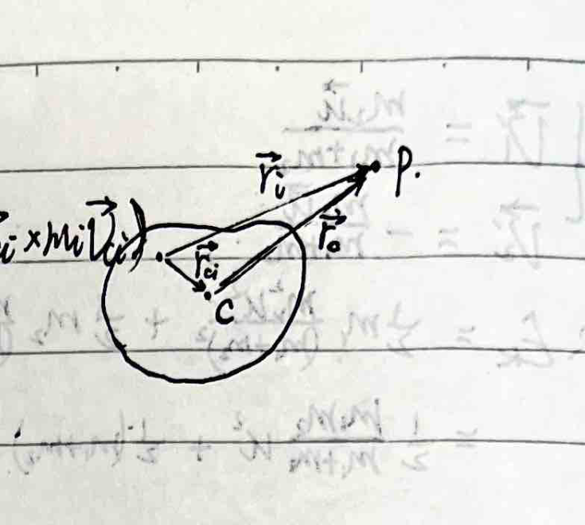
$$ = \sum (\vec{r}_c \times m_i\vec{v}_c + \vec{r}_c \times m_i\vec{v}_{ci} + \vec{r}_{ci} \times m_i\vec{v}_c + \vec{r}_{ci} \times m_i\vec{v}_{ci}) $$ $$ = \vec{r}_c \times m\vec{v}_c + \vec{r}_c \times (\sum m_i\vec{v}_{ci}) + (\sum m_i\vec{r}_{ci}) \times \vec{v}_c + \sum (\vec{r}_{ci} \times m_i\vec{v}_{ci}) $$ $$ \because \sum m_i\vec{v}_{ci} = 0, \quad \sum m_i\vec{r}_{ci} = 0 $$ $$ \therefore \vec{L} = \vec{r}_c \times m\vec{v}_c + \sum (\vec{r}_{ci} \times m_i\vec{v}_{ci}) $$Angular momentum of the center of mass + Angular momentum in the center of mass frame.
5. In the center of mass frame, the work done by inertial forces is zero. The work done by inertial torque is zero.
$$ W_{inertial} = \int (-m_i\vec{a}_c) \cdot d\vec{r}_{ci} = -\vec{a}_c \cdot \int m_i d\vec{r}_{ci} = 0 $$ $$ W_{inertial\, torque} = \int [\vec{r}_{ci} \times (-m_i\vec{a}_c)] \cdot d\vec{\theta} = -\int (m_i\vec{r}_{ci}) \times \vec{a}_c \cdot d\vec{\theta} = 0 $$6. Classic Application Examples
① Collisions
In the center of mass frame, $m_1v_{1c} + m_2v_{2c} = m_1v_{1c}' + m_2v_{2c}' = 0$
$$ v_1 - v_2 = v_{1c} - v_{2c} = e(v_{2c}' - v_{1c}') = e(v_2 - v_1) $$Solving yields $\begin{cases} v_{1c}' = -ev_{1c} \\ v_{2c}' = -ev_{2c} \end{cases}$
② Period of Celestial Motion
$$ G\frac{mM}{R^2} = \frac{mM}{M+m} \frac{4\pi^2}{T^2} R $$ $$ \therefore T = 2\pi\sqrt{\frac{R^3}{G(M+m)}} $$